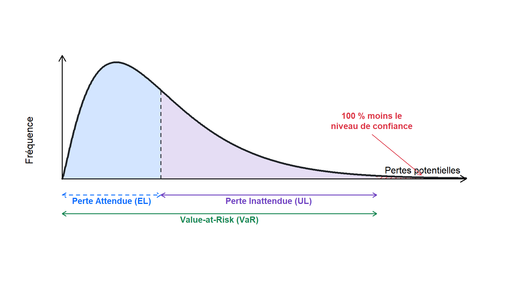
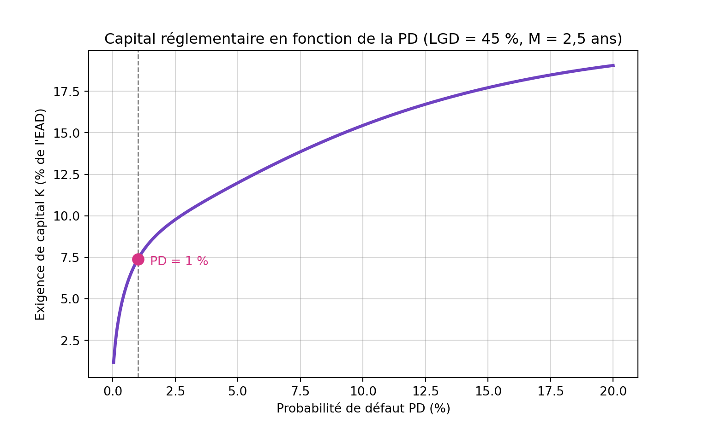
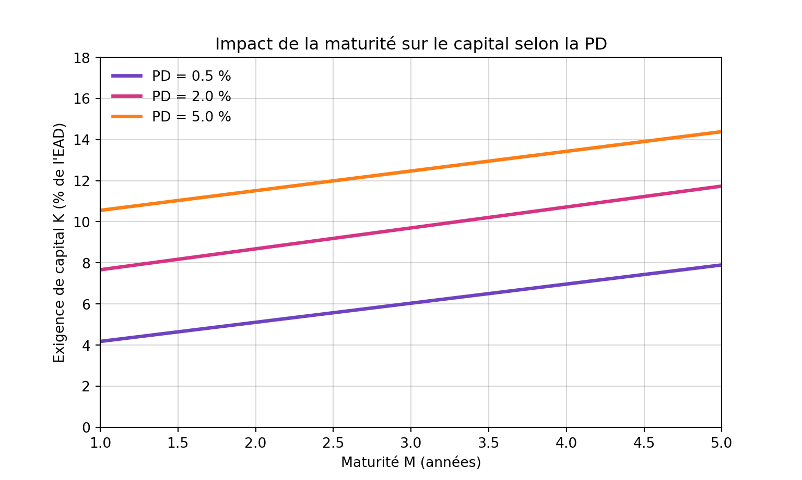

Du Modèle de Vasicek à la formule de capital Bâle III
Analyse analytique de l’approche IRB : fondements probabilistes et ajustement de maturité
Risque de Crédit
Bâle III
Finance Quantitative
Modélisation
Déconstruction mathématique de la formule de capital réglementaire Bâle III : du modèle structurel de Merton au modèle ASRF de Vasicek, jusqu’à l’ajustement de maturité.
0.1 Introduction
Pour comprendre la véritable nature du facteur de capital réglementaire \(K\), il faut plonger dans les fondements probabilistes de la théorie du risque de crédit. La formule bâloise est l’héritière du modèle de portefeuille à facteur unique de Vasicek (Vasicek 2002), formalisé sous le nom de modèle ASRF (Asymptotic Single Risk Factor) par Michael Gordy (2003) pour le Comité de Bâle (Basel Committee on Banking Supervision 2005).
Cet article déconstruit cette formule étape par étape, depuis le cadre structurel de Merton jusqu’à l’ajustement de maturité final.
0.2 Étape 1 : Le Cadre structurel et la décomposition du risque
Le modèle de Vasicek repose sur une approche structurelle du défaut, dans la lignée des travaux de Robert Merton (1974). On considère un portefeuille de crédits composé d’un très grand nombre d’emprunteurs. Pour un emprunteur individuel \(i\), la santé financière (la valeur de ses actifs) à l’horizon d’un an est modélisée par une variable aléatoire latente, notée \(Y_i\).
Par construction mathématique, cette variable est normalisée de sorte qu’elle suit une loi normale standard (moyenne de 0, écart-type de 1) :
\[Y_i \sim \mathcal{N}(0, 1)\]
L’apport fondamental de Vasicek consiste à postuler que la performance de cet emprunteur dépend de deux sources de variations strictement orthogonales (indépendantes) : un risque macroéconomique global qui affecte toutes les entreprises, et un risque purement idiosyncratique propre à l’entreprise. La variable \(Y_i\) se décompose ainsi sous la forme d’une combinaison linéaire :
\[Y_i = \sqrt{\rho}\, X + \sqrt{1-\rho}\, Z_i\]
où :
- \(X\) représente le facteur de risque systématique (l’état général de l’économie), commun à tous les emprunteurs du portefeuille : \(X \sim \mathcal{N}(0, 1)\).
- \(Z_i\) représente le facteur de risque idiosyncratique (propre à l’emprunteur \(i\), comme une fraude interne ou un mauvais lancement de produit) : \(Z_i \sim \mathcal{N}(0, 1)\).
- \(\rho\) représente la corrélation d’actifs : ce paramètre mesure la sensibilité de l’emprunteur à la conjoncture économique globale. Plus \(\rho\) est élevé, plus les défauts au sein du portefeuille seront corrélés entre eux, ce qui est précisément le risque que le capital réglementaire cherche à couvrir.
NoteLa corrélation n’est pas libre : elle est imposée par le régulateur
Contrairement à la PD et à la LGD, la corrélation \(\rho\) n’est pas estimée par la banque. Le Comité de Bâle l’impose via une formule décroissante avec la PD. Pour les expositions « Entreprises » (Basel Committee on Banking Supervision 2005) :
\[\rho(PD) = 0{,}12 \times \frac{1 - e^{-50\,PD}}{1 - e^{-50}} + 0{,}24 \times \left[1 - \frac{1 - e^{-50\,PD}}{1 - e^{-50}}\right]\]
La corrélation varie ainsi entre 24 % (PD faible) et 12 % (PD élevée). L’intuition : les grandes entreprises solides dépendent surtout du cycle macroéconomique (forte corrélation systémique), tandis que les emprunteurs déjà très risqués font défaut pour des raisons idiosyncratiques (faible corrélation).
0.3 Étape 2 : Définition du seuil de défaut inconditionnel
Dans ce cadre, un emprunteur fait défaut si la valeur de ses actifs \(Y_i\) s’effondre sous un certain seuil critique, noté \(C_i\). Sous ce seuil, la dette devient insurmontable.
La probabilité de défaut inconditionnelle (la \(PD\) de long terme que la banque observe historiquement au travers des cycles) est donc définie par :
\[PD_i = \mathbb{P}(Y_i < C_i)\]
Puisque \(Y_i\) suit une loi normale standard, nous pouvons appliquer la fonction de répartition de la loi normale (notée \(\Phi\)) :
\[PD_i = \Phi(C_i)\]
En inversant cette fonction, nous exprimons rigoureusement le seuil de défaut théorique \(C_i\) en fonction de la probabilité de défaut de l’emprunteur :
\[C_i = \Phi^{-1}(PD_i)\]
0.4 Étape 3 : L’Effet du cycle et la probabilité de défaut conditionnelle
Que se passe-t-il si l’économie subit un choc ? Imaginons que nous soyons capables de « figer » la conjoncture économique, c’est-à-dire de fixer mathématiquement la valeur du facteur systématique \(X\). La probabilité que l’emprunteur fasse défaut sachant cette situation économique précise est la PD conditionnelle, notée \(PD_i(X)\) :
\[PD_i(X) = \mathbb{P}(Y_i < C_i \mid X)\]
En substituant la décomposition de Vasicek et l’expression du seuil \(C_i\), nous obtenons :
\[PD_i(X) = \mathbb{P}\!\left(\sqrt{\rho}\, X + \sqrt{1-\rho}\, Z_i < \Phi^{-1}(PD_i) \;\middle|\; X\right)\]
Puisque la valeur de \(X\) est désormais fixée, la seule variable aléatoire restante est le risque idiosyncratique \(Z_i\). Isolons-la :
\[PD_i(X) = \mathbb{P}\!\left(Z_i < \frac{\Phi^{-1}(PD_i) - \sqrt{\rho}\, X}{\sqrt{1-\rho}} \;\middle|\; X\right)\]
Le facteur \(Z_i\) suivant une loi normale standard, nous réappliquons la fonction de répartition \(\Phi\) pour obtenir l’équation fondamentale de la procyclicité :
\[PD_i(X) = \Phi\!\left(\frac{\Phi^{-1}(PD_i) - \sqrt{\rho}\, X}{\sqrt{1-\rho}}\right)\]
Si \(X\) est très négatif (simulant une grave récession), le terme au numérateur grandit, et la probabilité de défaut de l’entreprise explose. C’est l’essence même du risque systémique.
0.5 Étape 4 : L’Injection de la contrainte réglementaire
Le régulateur prudentiel n’exige pas des fonds propres pour que la banque survive aux années normales, mais pour qu’elle puisse encaisser une crise systémique d’une rare violence. Le Comité de Bâle (Basel Committee on Banking Supervision 2005) a fixé le seuil de survie à 99,9 % : la banque doit détenir assez de capital pour que, dans 99,9 % des scénarios économiques à un an, ses pertes n’excèdent pas ses fonds propres.
Le scénario d’une crise extrême correspond donc au pire 0,1 % des états économiques possibles. Sur notre loi normale standard, la valeur de \(X\) correspondant à cette crise profonde est :
\[X_{\text{crise}} = \Phi^{-1}(0{,}001) \approx -3{,}09\]
Une valeur de \(X\) aussi négative traduit un choc macroéconomique situé à plus de trois écarts-types sous la moyenne - l’équivalent statistique d’une dépression majeure.
Par propriété de symétrie de la loi normale centrée, \(\Phi^{-1}(0{,}001) = -\Phi^{-1}(0{,}999)\). Pour obtenir le taux de défaut maximal du portefeuille dans ce scénario cauchemardesque (le Worst-Case Default Rate, \(WCDR\)), on injecte \(X_{\text{crise}}\) dans l’équation conditionnelle. Les deux signes négatifs s’annulent :
\[ \begin{aligned} WCDR_i &= PD_i(X_{\text{crise}}) = \Phi\!\left(\frac{\Phi^{-1}(PD_i) - \sqrt{\rho}\, X_{\text{crise}}}{\sqrt{1-\rho}}\right) \\[4pt] &= \Phi\!\left(\frac{\Phi^{-1}(PD_i) - \sqrt{\rho}\, \Phi^{-1}(0{,}001)}{\sqrt{1-\rho}}\right) \\[4pt] &= \Phi\!\left(\frac{\Phi^{-1}(PD_i) + \sqrt{\rho}\, \Phi^{-1}(0{,}999)}{\sqrt{1-\rho}}\right) \end{aligned} \]
Le passage du terme \(-\sqrt{\rho}\,\Phi^{-1}(0{,}001)\) à \(+\sqrt{\rho}\,\Phi^{-1}(0{,}999)\) illustre bien le mécanisme : un choc économique négatif (\(X_{\text{crise}} < 0\)) déplace le seuil de défaut vers le haut, ce qui augmente mécaniquement le taux de défaut conditionnel.
Ce \(WCDR\) représente ainsi la perte maximale que la banque devrait absorber sur son portefeuille avec une confiance de 99,9 % sur un horizon d’un an.
0.6 Étape 5 : L’Exigence de capital de base (Horizon à 1 an)
Si le portefeuille subit ce taux de défaut extrême, la perte par euro d’exposition (\(EAD\)) sera le produit de ce taux par la Perte en cas de Défaut (\(LGD\)) :
\[\text{Perte Maximale} = WCDR_i \times LGD_i\]
La distinction prudentielle entre provisions et capital entre ici en jeu. Les provisions comptables couvrent la Perte Attendue (\(EL = PD_i \times LGD_i\)). Les fonds propres ont pour vocation exclusive d’absorber la Perte Inattendue (\(UL\)), c’est-à-dire la différence entre la catastrophe de crise et la perte habituelle déjà provisionnée.
L’exigence de capital de base (pour un horizon strict d’un an) se définit donc comme :
\[K_{\text{base}} = \text{Perte Maximale} - \text{Perte Attendue} = \left[\, WCDR_i - PD_i \,\right] \times LGD_i\]
En remplaçant \(WCDR_i\) par son expression, on obtient le cœur du modèle :
\[K_{\text{base}} = \left[\, \Phi\!\left(\frac{\Phi^{-1}(PD_i) + \sqrt{\rho}\, \Phi^{-1}(0{,}999)}{\sqrt{1-\rho}}\right) - PD_i \,\right] \times LGD_i\]
0.6.1 Visualisation : la Value-at-Risk du portefeuille
Cette logique se lit directement sur la distribution des pertes du portefeuille, dans la représentation canonique du Comité de Bâle (Basel Committee on Banking Supervision 2005). Les pertes potentielles forment une distribution asymétrique à droite : la plupart du temps les pertes sont faibles, mais une longue queue concentre les scénarios catastrophiques. La Value-at-Risk (VaR) est le seuil de perte associé au niveau de confiance retenu (99,9 % sous Bâle III). Elle se décompose en deux blocs : la Perte Attendue (\(EL\), la moyenne de la distribution), couverte par les provisions, et la Perte Inattendue (\(UL = \text{VaR} - EL\)), que les fonds propres doivent absorber. C’est précisément cet \(UL\) qui correspond à \(K_{\text{base}}\).
Au-delà de la simple décomposition, ce graphique met en scène l’articulation de deux dispositifs réglementaires distincts qui se partagent la distribution des pertes : la comptabilité d’un côté, le prudentiel de l’autre.
La zone bleue (\(EL\)) relève de la comptabilité : c’est le domaine d’IFRS 9. La perte attendue n’est pas véritablement un risque, mais un coût prévisible. C’est ce que la banque sait, statistiquement, devoir perdre en moyenne sur son portefeuille année après année. La norme comptable IFRS 9 impose de reconnaître ce coût à l’avance, sous forme de provisions pour pertes de crédit attendues (Expected Credit Losses). Ces provisions sont passées en charge dans le compte de résultat et réduisent la valeur des actifs au bilan. Le montant provisionné suit le modèle de staging en trois étapes : dès l’octroi du crédit (étape 1), la banque ne provisionne que la perte attendue à 12 mois ; elle ne relève la provision au niveau de la perte attendue à maturité (lifetime ECL) que si le risque de crédit se dégrade significativement (étape 2) ou si l’actif devient déprécié (étape 3). En somme, l’\(EL\) est financée par le résultat, pas par le capital.
La zone violette (\(UL\)) relève du prudentiel : c’est le domaine de Bâle III. Le véritable danger pour une banque n’est pas la perte moyenne (déjà provisionnée), mais le fait qu’une année se révèle bien pire que la moyenne. Cette perte inattendue, l’écart entre le scénario de crise (la VaR à 99,9 %) et la perte habituelle, ne peut pas être provisionnée d’avance sans fausser en permanence le résultat comptable. Bâle III exige donc qu’elle soit couverte par des fonds propres. C’est exactement la quantité \(K_{\text{base}}\) dérivée plus haut : le capital n’a pas vocation à couvrir l’\(EL\), mais uniquement l’\(UL\).
Cette répartition éclaire d’ailleurs la soustraction du \(PD \times LGD\) dans la formule bâloise. Si le capital devait couvrir la totalité de la perte de crise (\(WCDR \times LGD\)), il y aurait double comptage : la banque immobiliserait des fonds propres pour une perte déjà couverte par ses provisions. En retranchant l’\(EL\), le régulateur garantit que provisions (IFRS 9) et capital (Bâle III) sont complémentaires et non redondants : deux lignes de défense empilées, jamais superposées.
Une nuance de praticien mérite d’être signalée : les deux mesures de l’\(EL\) ne coïncident pas parfaitement. L’\(EL\) comptable d’IFRS 9 est point-in-time et peut être calculée à maturité (étapes 2 et 3), tandis que l’\(EL\) réglementaire de Bâle est through-the-cycle à horizon un an. L’écart entre la provision IFRS 9 et l’\(EL\) réglementaire fait l’objet d’un traitement dédié sur les fonds propres CET1 (mécanisme de shortfall / excess of provisions).
Enfin, la queue rouge (au-delà de la VaR) n’est couverte ni par les provisions ni par le capital : ce sont les 0,1 % de scénarios les plus extrêmes que le système accepte délibérément de ne pas garantir. C’est le risque résiduel ultime, celui qui, lorsqu’il se matérialise, conduit à la défaillance de l’établissement.
0.7 Étape 6 : Le Risque de migration et l’ajustement de maturité (\(M\))
Si le modèle de Bâle s’arrêtait ici, il ferait l’impasse sur un risque structurel majeur. Le modèle ASRF de Vasicek est un modèle de type Default-Mode : il ne regarde que la probabilité qu’une entreprise soit en état de « défaut » ou de « survie » à l’horizon d’exactement un an.
Dans la réalité, une banque détient des prêts aux entreprises qui s’étalent sur 3, 5 ou 7 ans. Si une entreprise emprunte sur 5 ans, elle ne fera peut-être pas défaut la première année, mais sa qualité de crédit peut gravement se détériorer (par exemple, sa notation externe passe de AAA à BB). Cette dégradation entraîne une chute de la valeur du prêt sur les marchés financiers - ce qu’on appelle le risque Mark-to-Market ou Downgrade Risk. Plus la maturité résiduelle effective (\(M\)) d’un prêt est longue, plus ce risque de dégradation avant l’échéance est fort, ce qui justifie de détenir des fonds propres supplémentaires.
Pour intégrer cette dimension sans briser l’architecture du modèle, le Comité de Bâle a conçu un multiplicateur d’ajustement empirique de la maturité (Maturity Adjustment, ou \(MA\)). Cet ajustement repose sur deux mécaniques.
0.7.1 1. Le paramètre de lissage \(b\) : la sensibilité temporelle liée à la PD
L’impact de la maturité n’est pas le même pour tous les clients. Une entreprise extrêmement solide (très faible \(PD\)) est située très loin du seuil de défaut ; son risque principal est de subir de multiples dégradations lentes sur plusieurs années. À l’inverse, pour une entreprise déjà au bord du gouffre (très forte \(PD\)), le risque est le défaut immédiat ; rallonger la maturité n’ajoute que peu d’information.
Le Comité a donc défini une fonction de sensibilité \(b\), qui s’atténue lorsque la \(PD\) augmente :
\[b = \big(\, 0{,}11852 - 0{,}05478 \times \ln(PD_i) \,\big)^2\]
0.7.2 2. Le multiplicateur \(MA\) et l’ancrage à 2,5 ans
Le régulateur a calibré ce risque en considérant que la maturité moyenne « standard » d’un portefeuille de crédits d’entreprises mondiales était de 2,5 ans. Le multiplicateur s’écrit :
\[MA = \frac{1 + (M - 2{,}5) \times b}{1 - 1{,}5 \times b}\]
La complexité de ce terme obéit à une logique stricte :
- Le dénominateur \((1 - 1{,}5 \times b)\) agit comme un pont conceptuel. Il prend la formule de base de Vasicek (centrée sur 1 an pur) et la convertit en une exigence « Mark-to-Market » pour une maturité moyenne de 2,5 ans.
- Le numérateur \(1 + (M - 2{,}5) \times b\) crée l’échelle mobile individuelle. Si le crédit a exactement une maturité \(M = 2{,}5\) ans, le numérateur vaut 1. Si le prêt est très long (\(M = 5\) ans), l’exigence de capital est majorée proportionnellement. Si le prêt est court (\(M = 1\) an), le poids du risque est allégé.
0.8 La formule finale de Bâle III
En combinant le fondement probabiliste de Vasicek et la correction temporelle (risque de migration) du Comité de Bâle, nous aboutissons à l’équation maîtresse du Pilier 1 pour les expositions sur les Entreprises, les Souverains et les Banques :
\[\boxed{K = \left[\, \Phi\!\left(\frac{\Phi^{-1}(PD_i) + \sqrt{\rho}\, \Phi^{-1}(0{,}999)}{\sqrt{1-\rho}}\right) - PD_i \,\right] \times LGD_i \times \frac{1 + (M - 2{,}5) \times b}{1 - 1{,}5 \times b}}\]
Cette exigence \(K\) n’est qu’un taux (un pourcentage). Ce n’est qu’après avoir résolu cette imposante formule que la banque traduit ce risque théorique en montants réels :
- Elle obtient l’exigence monétaire de capital en multipliant ce taux par le montant de l’exposition : \(K \times EAD\).
- Enfin, par une simple ingénierie comptable visant à diviser le tout par 8 % (soit multiplier par 12,5), elle calcule ses célèbres actifs pondérés par le risque : \(RWA = K \times EAD \times 12{,}5\).
0.9 Application numérique avec Python
Traduisons l’ensemble de la chaîne en code. On implémente d’abord chaque brique réglementaire (corrélation, \(b\), \(WCDR\), capital), puis on calcule le RWA d’une exposition type.
import numpy as np
from statistics import NormalDist
import matplotlib
matplotlib.use("Agg")
import matplotlib.pyplot as plt
# Loi normale standard : Phi (répartition) et Phi^{-1} (quantile / fonction inverse)
_N = NormalDist()
Phi = _N.cdf
Phi_inv = _N.inv_cdf
# --- Briques réglementaires Bâle III (expositions Entreprises) ---
# Corrélation d'actifs imposée par le régulateur
def rho_corp(pd):
w = (1 - np.exp(-50 * pd)) / (1 - np.exp(-50))
return 0.12 * w + 0.24 * (1 - w)
# Facteur de lissage de la maturité
def b_factor(pd):
return (0.11852 - 0.05478 * np.log(pd)) ** 2
# Worst-Case Default Rate (PD conditionnelle au scénario de crise 99,9 %)
def wcdr(pd, rho):
return Phi((Phi_inv(pd) + np.sqrt(rho) * Phi_inv(0.999)) / np.sqrt(1 - rho))
# Ajustement de maturité
def maturity_adj(pd, M):
b = b_factor(pd)
return (1 + (M - 2.5) * b) / (1 - 1.5 * b)
# Exigence de capital K (par unité d'EAD)
def capital_K(pd, lgd, M):
rho = rho_corp(pd)
ul = (wcdr(pd, rho) - pd) * lgd # perte inattendue
return ul * maturity_adj(pd, M)Appliquons ces fonctions à une exposition « Entreprise » réaliste : PD = 1 %, LGD = 45 % (valeur prudentielle senior non garanti), maturité M = 2,5 ans, EAD = 1 000 000 €.
pd, lgd, M, ead = 0.01, 0.45, 2.5, 1_000_000
rho = rho_corp(pd)
K = capital_K(pd, lgd, M)
RWA = K * ead * 12.5| Indicateur | Valeur |
|---|---|
| Corrélation rho | 19.3 % |
| WCDR | 14.03 % |
| Perte attendue (EL) | 4 500 € |
| Exigence K | 7.39 % |
| RWA | 923 168 € |
| Capital requis (8% RWA) | 73 853 € |
On observe que pour 1 € prêté, la banque doit immobiliser environ 7.4 centimes de fonds propres durs (puisque \(8\% \times 12{,}5 = 1\), le capital par euro d’EAD est exactement égal à \(K\)) - au-delà des provisions qui couvrent déjà la perte attendue.
0.9.1 Le poids du capital en fonction de la PD
Le graphique suivant montre comment l’exigence de capital \(K\) croît avec la PD. La courbe est concave : le capital augmente vite pour les faibles PD puis sature, car au-delà d’un certain niveau de risque, la corrélation chute et la perte attendue (déjà provisionnée) absorbe une part croissante de la perte totale.
pd_grid = np.linspace(0.0003, 0.20, 300)
K_grid = np.array([capital_K(p, 0.45, 2.5) for p in pd_grid])
plt.figure(figsize=(8, 4.8))
plt.plot(100 * pd_grid, 100 * K_grid, lw=2.5, color="#6f42c1")
plt.axvline(1, ls="--", color="grey", lw=1)
k1 = 100 * capital_K(0.01, 0.45, 2.5)
plt.plot(1, k1, "o", color="#d63384", ms=9)
plt.annotate("PD = 1 %", (1, k1), xytext=(10, -2),
textcoords="offset points", color="#d63384", va="center")
plt.xlabel("Probabilité de défaut PD (%)")
plt.ylabel("Exigence de capital K (% de l'EAD)")
plt.title("Capital réglementaire en fonction de la PD (LGD = 45 %, M = 2,5 ans)")
plt.grid(color="grey", alpha=0.3)
0.9.2 L’effet de la maturité
À PD et LGD fixées, l’allongement de la maturité accroît le capital de façon linéaire, via l’ajustement \(MA\). L’effet est d’autant plus marqué que la PD est faible (puisque \(b\) décroît avec la PD).
M_grid = np.linspace(1, 5, 100)
cols = ["#6f42c1", "#d63384", "#fd7e14"]
pds = [0.005, 0.02, 0.05]
plt.figure(figsize=(8, 4.8))
for c, p in zip(cols, pds):
K_vals = np.array([capital_K(p, 0.45, m) for m in M_grid])
plt.plot(M_grid, 100 * K_vals, lw=2.5, color=c, label=f"PD = {100 * p:.1f} %")
plt.xlim(1, 5)(1.0, 5.0)plt.ylim(0, 18)(0.0, 18.0)plt.xlabel("Maturité M (années)")
plt.ylabel("Exigence de capital K (% de l'EAD)")
plt.title("Impact de la maturité sur le capital selon la PD")
plt.grid(color="grey", alpha=0.3)
plt.legend(frameon=False, loc="upper left")
0.10 Propriétés et limites du modèle
La formule Bâle III est élégante mais repose sur des hypothèses fortes dont le praticien doit être conscient :
- Portefeuille infiniment granulaire. Le modèle ASRF suppose qu’aucune contrepartie ne pèse significativement dans le portefeuille (le risque idiosyncratique disparaît par diversification). Le risque de concentration n’est donc pas capturé par la formule de Pilier 1 - il relève du Pilier 2 (ICAAP).
- Facteur de risque unique. Un seul facteur macroéconomique \(X\) gouverne toutes les corrélations. Les effets sectoriels ou géographiques ne sont pas modélisés explicitement.
- Corrélation imposée, non estimée. Les valeurs de 12 % à 24 % sont des calibrages réglementaires forfaitaires, pas le reflet de la corrélation réelle du portefeuille de la banque.
- Normalité gaussienne. La copule gaussienne sous-jacente sous-estime la probabilité de défauts simultanés extrêmes (queues de distribution), une critique majeure formulée après la crise de 2008.
- Additivité du capital. Le RWA d’un portefeuille est la somme des RWA individuels, ce qui découle directement de l’hypothèse de granularité infinie et facilite le calcul, mais ignore toute diversification résiduelle.
Ces limites expliquent pourquoi le capital de Pilier 1 calculé par cette formule est complété par des coussins (conservation, contracyclique, systémique) et par l’évaluation interne du Pilier 2.
0.11 Synthèse : la logique de construction
| Étape | Concept | Formule clé |
|---|---|---|
| 1 | Décomposition du risque (Merton/Vasicek) | \(Y_i = \sqrt{\rho}\,X + \sqrt{1-\rho}\,Z_i\) |
| 2 | Seuil de défaut inconditionnel | \(C_i = \Phi^{-1}(PD_i)\) |
| 3 | PD conditionnelle au cycle | \(PD_i(X) = \Phi\!\left(\frac{C_i - \sqrt{\rho}\,X}{\sqrt{1-\rho}}\right)\) |
| 4 | Scénario de crise à 99,9 % | \(WCDR_i = PD_i(X_{\text{crise}})\) |
| 5 | Perte inattendue = capital de base | \(K_{\text{base}} = (WCDR_i - PD_i)\times LGD_i\) |
| 6 | Ajustement de maturité | \(K = K_{\text{base}} \times MA\) |
0.12 Références Bibliographiques
Basel Committee on Banking Supervision. 2005. An Explanatory Note on the Basel II IRB Risk Weight Functions. Bank for International Settlements.
Gordy, Michael B. 2003. « A Risk-Factor Model Foundation for Ratings-Based Bank Capital Rules ». Journal of Financial Intermediation 12 (3): 199‑232.
Merton, Robert C. 1974. « On the Pricing of Corporate Debt: The Risk Structure of Interest Rates ». The Journal of Finance 29 (2): 449‑70.
Vasicek, Oldrich A. 2002. « The Distribution of Loan Portfolio Value ». Risk 15 (12): 160‑62.